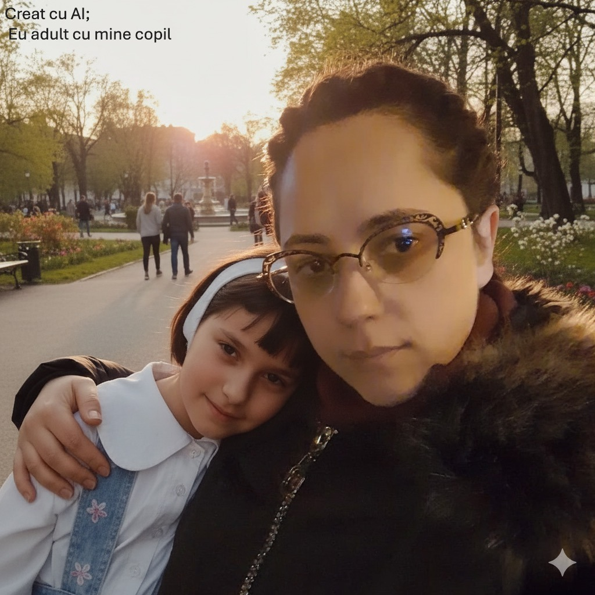

Iubirea de Sine Începe de la Copilul din Tine: Cum să-l vindeci și să-l iubești!

Mulți dintre noi căutăm iubirea de sine în strategii complicate, dar uităm să ne întoarcem la sursa noastră: **copilul care am fost odată**. Acea mică ființă, plină de visuri, dar și de răni, ne influențează viața de adult mai mult decât ne dăm seama.
Copilul Interior: Mai mult decât o amintire
Copilul tău interior nu este doar o amintire, ci o parte vie din tine care îți poartă emoțiile și traumele din trecut - bucurii, frici, curiozitate. Rănile și nevoile nesatisfăcute din copilărie îți afectează adesea reacțiile de adult (de exemplu : frica de eșec, dificultatea de a cere ajutor.)
4 Exerciții Practice de Reconectare și Iubire
-
Dialogul Interior Blând
Închide ochii și imaginează-ți copilul. Ce îți spune? Răspunde-i ca unui părinte iubitor: **"Ești în siguranță. E OK să greșești. Te iubesc."** Oferă-i acum, ca adult, validarea pe care nu a primit-o atunci.
-
Scrisoare către Micul Eu
Scrie o scrisoare copilului tău, recunoscând momentele dificile prin care ați trecut și asigură-l că acum ești acolo pentru el. Acesta este un act profund de acceptare.
-
Refacerea Bucuriilor Simple
Fă un lucru pe care îl iubeai mult în copilărie, dar l-ai abandonat (desenează, dansează, joacă-te). Acest lucru reîncarcă energia ludică și te conectează cu bucuria pură.
-
Fotografia Afectivă
Privește o poză cu tine copil și spune-i lucrurile pe care ți-ai dorit să le auzi.
Iubirea de Sine este un Act de Părințire
Tu ești acum părintele tău cel mai bun. Nu e un proces de o zi, ci o călătorie. Fiecare act de blândețe față de tine cel de atunci este un pas spre vindecare. Începe azi!